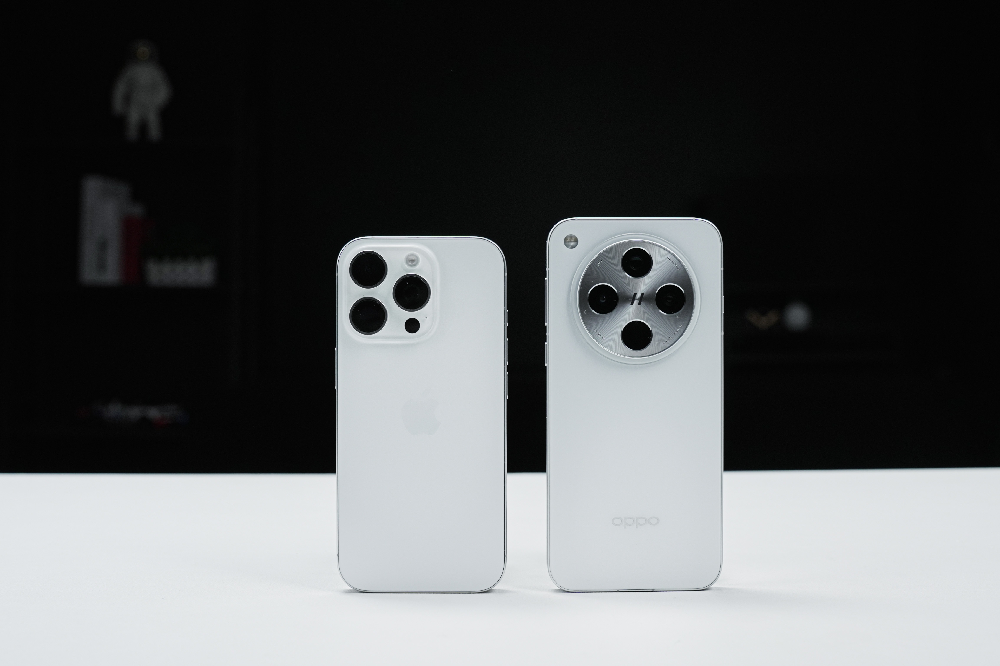

OPPO Find X8评测：轻薄直屏，“果感”OPhone，氛围感的神？
古希腊掌管氛围感的神
氛围感作为这两年的热门词，不仅是一种意象具象化的美感，更是当下年轻人追求生活的松弛感，大家都想要通过影像记录下这样的氛围感，但相信很多人跟我一样，流连于各大平台的氛围感照片视频，总会想自己怎么拍不出来，到底是缺设备缺专业还是缺什么。今天，我还真找到了答案——OPPO Find X8，用一句网络热梗来说，它就是“古希腊掌管氛围感的神”。那现在，一起来深入看看OPPO这次有什么样的惊喜吧！
一个小目标，一握巅峰轻薄直屏
都说OPPO斥巨资一个亿只为打造“芯片级封装技术”，本来我是抱着这一看就是营销的心态看待的，但当拿起这台手机握在手上的那一刻，真的会惊呼“这就是OPhone”。机身的轻薄，四边等宽的极窄边框和几乎完美的R角，加上纯直的无边屏幕，“果味”的几大要素，在OPPO Find X8上有了形态，不得不说，一个亿的含金量这一刻在观感和手感上，有了实感。
OPPO Find X8拥有6.59’’的黄金尺寸，这在国产手机市场里算是独一档，手感上我个人感觉跟iPhone16 Pro有过之而无不及，而且比起6.31英寸的略显小巧，6.59英寸在我手上，反而更舒适跟手，单手打字更不容易误触。

不过当iPhone16 Pro和OPPO Find X8拿在一起，你会感觉到OPPO Find X8大尺寸反而更显得轻薄，特意看了一下iPhone16 Pro整机重量为199g，OPPO Find X8整机重量为193g。两者都没有头重脚轻的倾斜感，但很明显可以看到的是OPPO Find X8的镜头凸起控制的更好，在同样都做了潜望的情况下能做到这样，必须好评。
屏幕方面，OPPO Find X8跟Pro版对齐，10.7亿色1.5K屏，全局激发亮度都能达到1600nit，并且都支持高频PWM调光以及OPPO独家的ProXDR显示和OPPO熄灯护眼技术，加上全新ColorOS 15，以及全新的UI设计页面，观感上的舒适度拉满。
此外在整体机身设计上，OPPO Find X8采用了色彩统一的全覆盖配色，没有中框和机身背部颜色的那种割裂的疏离感，在观感和握持上更浑然一体。
镜头Deco部分，延续了标志性的寰宇对称式设计，但做了极致的简化，让镜头模组占全C位，视觉上更干净，同时放大了镜头的优势。
抓拍live张张氛围感，抬手就是大片
用了几天体验下来，要说懂生活，玩转live氛围，OPPO的这台OPPO Find X8，算是直击年轻人的痛点，同时也是最契合年轻人的时尚单品——OPhone。“果里果气”只是它外在高级带来的“回头率式形容”，真正强大的还是它全面升级的影像实力。
整机最显眼的就是这个圆形镜组，后置三摄分别为LYT-700广角主摄、JN5超广角以及一枚支持3倍光变的LYT-600潜望长焦镜头，当我知道OPPO在这么小的体积以及厚度里面，而且作为一台标准版，还是塞下了一颗潜望镜头，有一种买到就赚到的感觉，这在标准版的安卓阵营里面，是绝无仅有的存在。
当然很多小伙伴可能就要说了，堆料+轻薄，谁知道这回又暗戳戳牺牲什么？其实不然，OPPO的技术班底真别小瞧，OPPO Find X8首创了三重棱镜反射光路设计，光线连跳通过三重棱镜，最后跳到了倒挂的传感器上，完成了曝光。这招和iPhone的“四重反射棱镜长焦”有点像，都是为了让手机在保持潜望长焦镜头的高清画质的同时，还能瘦身成功。乍一看今年的OPPO和苹果貌似有着由内而外的心有灵犀。但实话实说，我个人体验下来，对比果子挤牙膏式的长进，OPPO的技术创新速度所带来的性价比，是远超果子的。
这一次OPPO带来的无影抓拍，就是很好的例证。抓拍不稀奇，但用最传统的长按，实现最高200张的全量计算高速连拍，不卡顿不掉算法，这就是OPPO的独家高明之处了。OPPO Find X8采用了自适应瞬时双帧技术，新增快门自适应技术，随时抓拍瞬间画面，而且我发现，这个连拍快门声，听着很清脆，有一种干爆cmos的感觉。
整体体验下来，无影抓拍的惊喜不是一点半点，首先就是超清实况同样出现在无影抓拍里面，这一点可能有些小伙伴觉得多余，抓拍还存实况，徒增内存占空间。但经常拍照的小伙伴都知道，抓拍live的好处就是怎么拍都能出片，不管怎样都有的选，而不是抓拍了一堆闭眼和半睁不睁、头发凌乱的画面，这种“车祸”现场是会挂网上教人避雷的。
OPPO Find X8每一张抓拍都是超清实况所带来的氛围感，这一种“果感”的鲜活live，也是我个人非常喜欢的点。尤其是在拍摄宠物或者在氛围感极强的夕阳、蓝调时刻等等场景，都能拿出这台手机抬手一拍，直接成为“掌管氛围感的神”。
另外，也许是为了打造更好的直出氛围感和网感，OPPO给了很多模式和照片风格，在拍摄上给了更多的选择，我摸索了一下，在人像模式界面，UI相比上一代有所改变，点击柔光环图标，有「朦胧」、「柔美」、「梦幻」的选项，拍摄过程可以看到光线照到的地方会有柔光效果，也就是摄影界称之为“黑柔”、“白柔”的风格。在某些氛围下拍摄，会起到十分惊艳的出片效果，加上live图，可以转出为图片或视频，像小红书爆火的“神明少女”、抖音的变速氛围视频都能随手直出，不仅省下了柔光镜片的钱，还省去了后期的时间。
天玑上限看OPPO，冰川续航掉电太难
在前段时间的联发科天玑9400的发布会上，天玑上限看OPPO几个大字很是醒目，而跟联发科合作多年的OPPO，市场也早已证明他们芯片调教的实力。这次OPPO Find X8全系搭载新一代天玑9400，性能方面我是没有太多顾虑，毕竟卷到现在，基本上都在走向AI新体验。
得益于OPPO对天玑9400的调校+自研潮汐引擎，所有游戏测下来，惊喜其实表现在满帧之外，这台OPPO Find X8的整体功耗控制的极好，《原神》在超帧超画撑到90帧玩下来，也没有烫手的感觉，流畅丝滑体现的淋漓尽致。
续航方面，OPPO Find X8首次搭载冰川电池，密度更高，能效更好，5630mAh搭配80W有线快充+50W无线闪充，以及10W的无线充电。这个容量可能相比于中端机的超大电池来讲优势不明显，但在如此轻薄有料以及旗舰调教的OPPO Find X8身上来说，这个配置已经告别续航焦虑了。而且得益于潮汐引擎的性能调度，使用几天体验下来的感觉是这个手机的电很耐用，相比于其他手机，X8明显掉电更难。模拟煲剧实测下来，满电看完一部二三十集的剧，是轻轻松松的。
另外还值得一提的就是OPPO超前瞻部署，磁吸生态+一碰互传。支持最高50W的磁吸无线充电，且推出的系列磁吸配件兼容iPhone生态，而一碰互传，则跳脱了安卓的互传生态，拥抱iOS系统生态，打破安卓和iPhone的分享壁垒，这一点我愿称OPPO为有格局的OPhone，iPhone用户的下一台Phone，或许可以是OPhone。
总的来说，OPPO Find X8这一次，从外观来讲，你可以说它“果感”，甚至可以大胆的说它就是新一代的OPhone。这不是夸耀，当你仔细去感受OPPO Find X8，影像的氛围感比肩富士，抓拍直出张张live，专业大片哈苏联名，性能调教拔高上限，系统丝滑「机圈德芙」，全局AI一键即答，它真的很全面，很超越，它就是今年顶尖旗舰机的标准答案，是机圈影像和系统的标杆。
产品概览OPPO | OPPO Find X8 |
操作系统：Android,ColorOS 15.0 CPU：联发科天玑9400
运行内存：12GB,16GB 电池容量：5630mAh
充电：80W有线快充，50W无线快充 后置摄像头：5000万像素,主摄，F1.8
价格：4199起